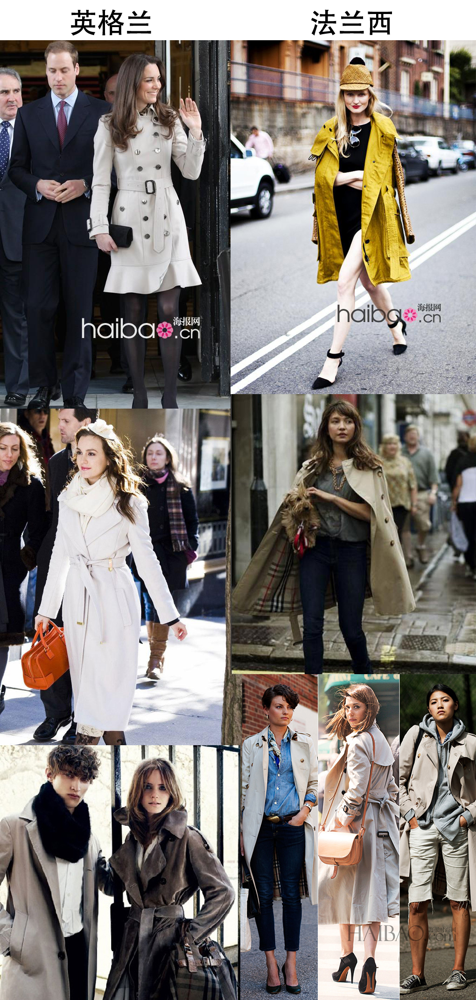

正文: 我类个大去咚咚锵呀！谁这么缺德邀请我回答这个问题？有跟和尚借梳子的么？这是嘲讽的最高境界么？？？
不过，我是个不怕鄙视，不畏讽刺，心态坚强，积极乐观，自信心过剩的人，说白点，就是脸皮极厚的人。于是，4/5秒后，我决定欣然接受这个邀请，好好的回答这个问题。
看看问题的关键字：【胸大】，【小清新】，【英伦风】。
嗯，
第一步，我们从胸大下手，胸大，胸大，胸大，胸大，胸大，胸大，胸大，胸大，胸大，胸大，胸大，胸大……谁胸大呢？我脑子里瞬间闪现一拖拉库的名字，自动屏蔽那些盐水袋和硅胶姑娘后，嗯，我有了一个名单。
第二步，在这个名单里，按照姑娘的脸，思考她们“英伦”和“小清新”的可能性。
第三步，巧妙利用搜索引擎。
【英伦篇】：
于是，总之，那么，我们从易入难，先从【英伦】和【大胸】的纠葛开始。必定，英伦对身材的限定比较宽泛，更注重对气质的要求。（学院风就不单独说了，因为很大一部分和英伦重复）
我脑名单排名第一位的，就是《Gossip Girl》的Queen B呀，这是一个胸大的（？），同时，在用绳命在演绎英伦风的女纸呀！好吧，其实，她的胸并不算很大，但是，并不影响论证结果，不信，你接着往下看。。。。
来张赏析，有图有真相！no pic i say a 杰宝！
各位大概看出点端倪了吧？
是的，其实英伦风跟大胸小胸毫无关系，反正都遮的严严实实的。
英伦风的天字一号关键字：发饰，帽子
看下图，对比相当明显，反正脑袋不能空着，一旦空着，风格就顿时南下，从英格兰，直接转成法兰西。
英伦风天字二号关键字：斗篷，风衣
风衣这个很有意思，你说英伦吧，一不小心就法兰西了。
来几张对比

看出点门道了吧？
庄重，成套，有质感，就是英伦风。
随意，混搭，不系扣，就是法国味。
而这一切，当然都和胸大胸小毫无关系，因为看不见呀魂淡！
英伦风天字第三号关键字：格子

可是关于格子，我必须强调强调强调强调强调再强调，千万不要随意尝试，特别是那些看起来气质比较淳朴的姑凉，
因为，很有可能，你以为你穿起来是这样：
或者是这样：
但事实是这样：
或者这样：
阶段性英伦总结：把胸遮起来，高领花边衬衫，小领结，发饰，帽子，厚重，成套，斗篷，风衣（把扣子扣好），格子。
【小清新篇】：
大胸《Gossip Girl》S姑凉小清新照镇楼！
国际惯例，上杰宝
小清新1号关键字：淡雅，灰度
没有浓烈的元素，无论是款式，还是颜色，都是淡淡的，不饱和的，带着灰的，和之前的厚重的英伦风比起来，小清新，简直【轻】的可以飘起来。
小清新是不穿黑色的！
小清新2号关键字：飘逸，柔软

无论是雪纺还是棉，都是最好表现小清新的元素，因为他们飘呀，软呀。。。
你给我穿个皮衣小清新试试！
小清新3号关键字：宽大

小清新是不穿紧身衣的！！！不穿任何看得出曲线的衣服好咩！
必然是要宽大呀！
这一宽大，其实胸的问题，就瞬间解决了。。。。
跟英伦一样，看不到胸呀看不到胸！
小清新4号关键字：发型
发型不能太干净（非清洁度那个干净），不能太清楚，不能太刚直，不能太沙宣，最好也不要太黑。最好是，软软的，蓬蓬的，乱乱的。。。。。
这种发型，是无论如何，也小清新不起来的：
小清新5号关键字：自备柔光，逆光和LOMO
这个需要解释么？
逆光逆成这样，穿什么样，长什么样？还重要么？重要么？要么？么？
这就是小清新！永远站在别人的逆光位置的小清新！
小清新6号关键字：自备麦田和草地，并且尽量不要露脸！
无麦田不成小清新。
小清新7号关键字：道具很重要
有了道具，有没有脸都不重要了，更何况是衣服？？？
阶段性小清新总结：逆光，衣着宽大，柔软，飘逸，麦田，后脑勺，蓬松，不饱和，不看镜头，道具，看不到胸。
看到木有，胸大不大，并不是关键，重点还是别露出来。。。。
楼下有个喷油提醒的好，他说，我这更像是教的大家如何拍出小清新的皂片，可是殊不知，小清新貌似大部分，只存在于皂片之中呀。。。。。。哈哈哈哈哈，哈哈哈哈哈哈
==========================
综上所述，无论是【英伦】还是【小清新】，都跟胸大小无关。。。。
那跟神马有关呢？？？
体重呀！亲！！！
你见过 【肥腻的小清新】 和 【大吨位的英伦风】 ？
==================
PS：等我爆照的都洗洗睡吧，就像某人说滴，姐走的是女杀手参加葬礼的路线。。。。
看到了乃们会作恶梦滴。。。。。